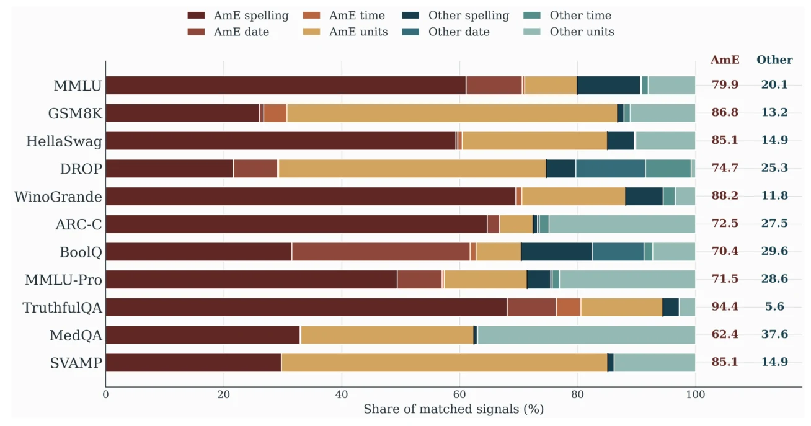
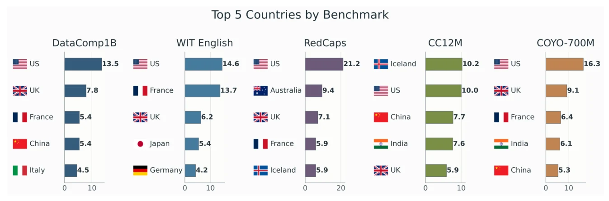
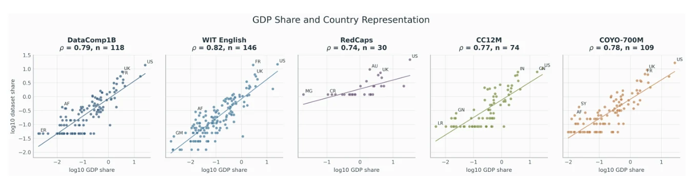

Seven audit dimensions
A reusable taxonomy turns questions about users into evidence that can be measured or inspected.
Auditing evaluation resources
A user-centric framework for auditing evaluation resources
University of Alberta
Benchmark scores depend on choices about language, geography, reference answers, and scoring rules. WhoseBench distinguishes source users, whose content and judgments shape a resource, from target users, whose needs and contexts its results are intended to inform.
The study audits 11 text benchmarks and five image-text resources. Its three empirical analyses connect conventions in benchmark content, country visibility in textual metadata, and the user assumptions made inspectable by public documentation.
A reusable taxonomy turns questions about users into evidence that can be measured or inspected.
Content, scoring, geography, and documentation are examined across 16 resources.
Six documentation fields help creators state the scope and assumptions of evaluation claims.
The framework links what a resource contains, where its content comes from, how answers are scored, and which user contexts its scores are meant to represent.
| Dimension | What the audit asks | Illustrative evidence |
|---|---|---|
| Linguistic and locale conventions | Which forms are treated as default? | Spelling (e.g., color/colour), date formats, time (e.g., 7 pm/19:00), and units (e.g., miles/kilometres) in questions, passages, options, and gold answers |
| Geographic visibility | Which countries are visible? | Country names, demonyms (e.g., Japanese), capitals, and selected cities (e.g., Paris) in captions and metadata |
| Socioeconomic structure | What relates to country visibility? | GDP share, population share, GDP per capita, Internet usage, and tourism arrivals |
| Source-user context | Where does content originate? | Sources (e.g., examinations, Wikipedia, Reddit, CommonCrawl), website domains (e.g., bbc.co.uk, reddit.com), and country-code domains (e.g., .uk, .ca, .jp) |
| Target-user assumptions | Whose settings can scores inform? | Intended users (e.g., students, clinicians), evaluation audiences, deployment settings, and conditions for interpreting results |
| Annotator visibility | Whose judgments define labels? | Expertise (e.g., medical professionals), demographics, locale (e.g., country, language variety), recruitment (e.g., crowdsourcing), compensation, protocols, and quality control (e.g., inter-annotator agreement) |
| Evaluation normalization | Are valid alternatives accepted? | Normalization rules, accepted variants (e.g., color/colour), locale conventions, and paired scorer-sensitivity tests |
Across 11 text benchmarks, American-centered forms account for 62.4% to 94.4% of matched spelling, date, time, and measurement signals. This is a share among detected signals; it is not the share of all benchmark items. The paper separately reports signal coverage, which ranges from 5.97% of WinoGrande items to 78.08% of DROP items.
| Convention | American-centered example | Other user-valid example |
|---|---|---|
| Spelling | color, center | colour, centre |
| Numeric date | 04/21/2025 | 21/04/2025 |
| Written date | April 21, 2025 | 21 April 2025 |
| Time notation | 7:00 pm | 19:00 |
| Distance | 5 miles | 8.05 kilometres |
| Temperature | 68 degrees Fahrenheit | 20 degrees Celsius |

Excluding spelling leaves an American-centered majority in eight of the 11 resources. This shows that the pattern is not limited to orthography, while ARC-Challenge, MedQA, and MMLU-Pro have different non-spelling profiles.
| Benchmark | Items with a signal | American-centered share, excluding spelling |
|---|---|---|
| MMLU | 26.60% | 66.9% |
| GSM8K | 25.40% | 83.3% |
| HellaSwag | 38.11% | 71.2% |
| DROP | 78.08% | 72.3% |
| WinoGrande | 5.97% | 77.2% |
| ARC-Challenge | 18.73% | 22.5% |
| BoolQ | 44.92% | 68.9% |
| MMLU-Pro | 37.80% | 47.3% |
| TruthfulQA | 7.59% | 90.5% |
| MedQA | 65.85% | 44.3% |
| SVAMP | 9.30% | 80.0% |
Paired tests compare reference-consistent answers with meaning-preserving spelling, date, or time variants under the same scoring rules. The largest change occurs in DROP exact match; TruthfulQA's reference-ranking measures behave differently.
| Benchmark | Measure | Original | Variant | Change | 95% CI for change |
|---|---|---|---|---|---|
| DROP | Exact match | 100.0 | 33.3 | −66.7 | [−92.3, −36.4] |
| DROP | Token F1 | 100.0 | 77.2 | −22.8 | [−41.6, −5.2] |
| TruthfulQA | BLEU correctness | 97.0 | 97.0 | 0.0 | [0.0, 0.0] |
| TruthfulQA | ROUGE-1 correctness | 97.0 | 97.0 | 0.0 | [0.0, 0.0] |
| TruthfulQA | ROUGE-2 correctness | 100.0 | 93.9 | −6.1 | [−16.1, 0.0] |
| TruthfulQA | ROUGE-1 similarity | 100.0 | 88.9 | −11.1 | [−13.5, −9.0] |
Confidence intervals use question-clustered bootstrap resampling. These tests measure scorer sensitivity to valid answer expression, not model accuracy.
The study identifies explicit country references in captions and associated text from DataComp1B, WIT English, RedCaps, CC12M, and COYO-700M. Among records assigned uniquely to a country, the United States leads four resources; Iceland leads CC12M. The top three countries account for 26.8% to 37.6% of resolved assignments.

Country visibility is strongly associated with national GDP share across the five resources (mean Pearson r = 0.780; mean Spearman ρ = 0.778). In a separate balanced WIT comparison, the US share falls from 20.0% for English to 8.5% for non-English text, while GDP associations persist.

Two annotators assessed public papers, dataset cards, and repositories for all 16 resources. Each criterion was scored as absent (0), explicitly mentioned (1), or operationalized through inspectable evidence (2). All 16 resources operationalize source-user context, but none operationalize target-user context.
| Criterion | Audit question and examples |
|---|---|
| Source-user context | Does the documentation identify content producers, including source populations, platforms (e.g., Reddit, Wikipedia), institutions, or collection processes? |
| Target-user / evaluation context | Does it specify intended users (e.g., students, clinicians), evaluation audiences, deployment settings, or contexts in which scores apply? |
| Annotator visibility | Does it describe expertise, demographics, locale, recruitment (e.g., crowdsourcing), compensation, quality control, or the absence of human annotation? |
| Locale assumptions | Does it document spelling (e.g., color/colour), date, time, measurement, currency, numeric-format, language-variety, or source-language conventions? |
| Evaluation normalization | Does it document how scoring handles valid alternative answers, formatting (e.g., date formats), or locale-specific equivalents? |
| Source / geographic metadata | Does it expose URLs, website domains (e.g., bbc.co.uk, reddit.com), top-level domains (e.g., .uk, .ca, .jp), language tags (e.g., en, fr, ja), or country and region fields? |
| Criterion | Mean / 2 | Mentioned | Operationalized |
|---|---|---|---|
| Source-user context | 2.00 | 100.0% | 100.0% |
| Target-user / evaluation context | 1.00 | 100.0% | 0.0% |
| Annotator visibility | 0.56 | 56.2% | 0.0% |
| Locale assumptions | 0.31 | 25.0% | 6.2% |
| Evaluation normalization | 1.44 | 75.0% | 68.8% |
| Source / geographic metadata | 0.69 | 37.5% | 31.2% |
“Mentioned” includes criteria scored 1 or 2; “operationalized” includes those scored 2.
The paper translates the audit into a minimal reporting checklist that benchmark creators can apply and benchmark users can inspect.
Reading the evidence. The convention detector covers selected observable forms, country visibility is based on explicit textual references, and the documentation scores describe released materials. These measurements help define what the audited resources support.